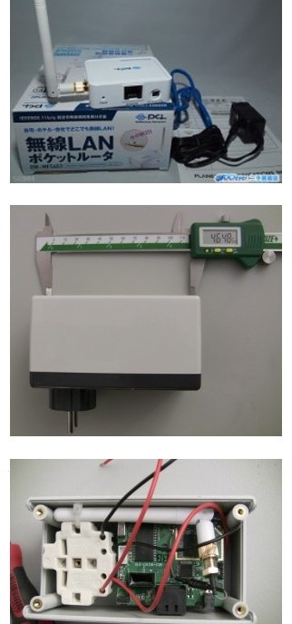

Qui sommes nous ?
une ONG qui défend la liberté de l'information depuis 1985
Nos atouts
- un statut consultatif à l'UNESCO
- 150 correspondants dans 130 pays
- un réseau d'ONG locales partenaires
Notre activité
- Monitoring de la liberté de l'information et de la censure en ligne
- Plaidoyer pour les blogeurs et journalsites menacés ou emprisonnés
- Assistance juridique, financière et matérielle pour les netcitoyens et les journalistes
- Formations à la couverture médiatique en période électorale, à la sécurité physique à la sécurité numérique
Sécurité numérique
Vous devez vous y intéresser. En 2013, le NYT a été victime d'attaques venant probablement de Chine. Le journal a été infiltré grâce au piratage non pas de l'ensemble du SI mais de comptes individuels.
À la lumière des révélations de cette année, il devrait être clair que toute communication non chiffrée entre un journalistes et ses sources représente un risque considérableE. Snowden cité par le New-York Times dans How Laura Poitras Helped Snowden Spill His Secrets
Les bases
Le problème entre la chaise et le clavier
- Comme dans les westerns, ne vous asseyez pas dos à une fenêtre
- Utilisez des écans de protection
- En terrain "hostile" ne vous séparez jamais de votre ordinateur
- Mettez à jour votre système d'exploitation et vos logiciels
- Utilisez un antivirus, ClamXav, ClamTk, Avast, MSE, Mc Afee , Norton et mettez à journ les définitions
- Activez votre Firewall
- Vérouiller votre session
- Chiffrez votre disque dur avec PGP, BitLocker, TrueCrypt, FileVault
Mots de passe
Votre mot de passe est-il vraiment robuste ? Qui veut essayer ?
Les phrases de passe
Oubliez les mots de passe et utilisez des phrases de passe.
Si vous avez besoin d'aide, utilisez un password manager : lastpass, onepassword.
Des traces sur votre ordinateur
historique de navigation, cookies, mots de passe enregistrés, historique des fichiers, logs des conversations skype, msn et autres, emails, etc.
Solutions
- En ligne : utilisez la navigation privée
- Vérifiez les options de confidentialité de vos logiciels
- Effacez vos fichiers de manière sécurisée
- Pour les plus paranos : utilisez un live OS tel que Tails
Des traces sur le réseau

Pour protéger vos échanges en ligne, utilisez
- https: chiffre votre traffic internet si le site web visité le propose
- Tor bundle: anonymise votre surf en ligne. Anonymisation et chiffrement sont deux choses différentes
- VPN: chiffre toute connection sortante depuis votre ordinateur vers Internet
Spyphones
Un smartphone est un ordinateur. Tout ce qui a été mentionné précédemment s'applique également aux spyphones smartphones.
Image issue de In 30 Minutes guides sous licence CC 2.0
En communication
- Interception légale
- L'algortihme de chiffrement du réseau GSM est cassé depuis longtemps.
[Rainbow table] + [un peu de matériel de téléphonie] = chiffrement cassé pourmois de $500
En veille
De nombreux logiciels peuvent transformer votre smartphone en micro espion. Ils doivent cependant être installés sur votre téléphone.
Éteint
La batterie, branchée, est toujours une source d'énergie. Avec la collaboration l'opérateur téléphonique, qui lui peut accéder aux paquets envoyés à la carte SIM (Application Protocol Data Unit), le téléphone peut théoriquement être activé.
Batterie démontée
Sans batterie, pas d'énergie, pas de signaux transmis, pas de surveillance.
In my fridge ← Snowden
Note : il est impossible de retirer la batterie sur un iphone
On reste en contact
- Jean-Marc Bourguignon
fo0@werebuild.net // @fo0_ - Grégoire Pouget
gregoire@rsf.org // GPG ID: 2BBC1ECE // @fightcensors_en // @barbayellow